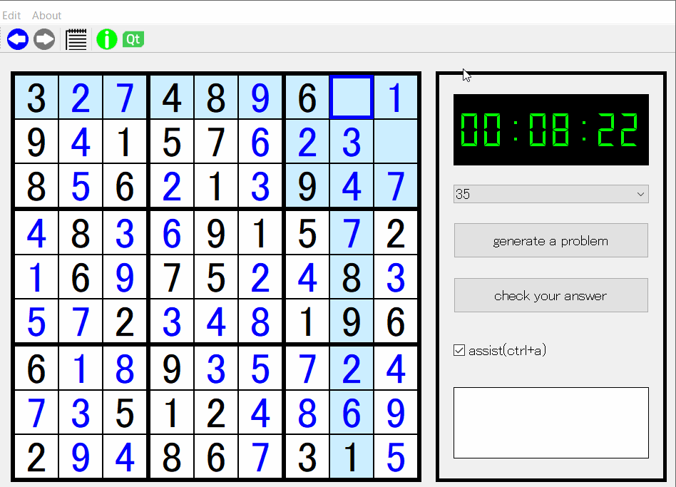

Quick Number Place
INDEX
DEMO
ARCHIVES
GAME RULES
数独のルールは至ってシンプルです。 数独の盤面は9×9マスの格子からなり、通常は3×3マスのブロックが3×3個正方形に並んだ形となっています。 プレイヤーは1から9までの整数でマスを埋めますが、この時縦、横、ブロック内で重複が生じてはなりません。 通常は20～30個程度のマスが既に埋められており、これをヒントとしてすべてのマスを埋めるのがこのゲームです。 傾向としてはヒントは少ない方が難しくなりますが、例外もよくあるようです。
USAGE
ダウンロードしたら、まずzipファイルを解凍して適当な場所に保存し、README_日本語.txtをお読みください。
操作方法は、基本的にマスをクリックし、選択したマスの番号をキーボードから打ち込むことになります。
入力した番号は0とbackspaceで消去できます。
スペースキーで中央のマスを選択し、矢印キーで選択するマスを変更することも可能です。
その他ショートカットキーは本体のボタン等に記載してあります。
UPDATES
v1.0
最初のpublic releaseとなります。
ナンバープレースの問題を生成し、生成完了からプレイヤーが答え合わせボタンをクリックするまでの時間を秒単位測るタイマーも実装しています。
また、無制限のUndo/Redo機能や、初心者に嬉しい重複を許さない範囲のハイライト機能も実装しました。
ベストタイムの保存は、レジストリを汚したくないとの思いと、QtとJSON、iniファイル周りの私の理解不足のため実装できていません。
ALGORITHM
以下のようなラスベガス法の一種ともいえそうな確率的アルゴリズムを用いています。
1.まず乱数とバックトラッキング(深さ優先探索)を用いて完成した盤面を生成する
2.指定されたヒント数に応じてランダムにマスを空欄にしていき問題を生成する
3.生成された問題の答えが一意に定まっているか、バックトラッキングを数字の小さい順と大きい順からそれぞれ行い、一致するかどうかで判定する。
4.解答が一意定まるまで2,3を繰り返す
このようなアルゴリズムのため、ヒントの数を25より少なくすると問題の生成に極端に時間が掛かってしまいます。
最低値に設定してある25個のヒントでも、1秒未満で生成できることもあれば3分以上かかることもあります。
これはこのアルゴリズムの深刻な課題なので、今後マルチスレッドを用いて気にならない程度に生成時間を削ることを目標とします。
(人工知能で一瞬で生成してしまう技術もあるようですが、AIに関して勉強不足な上、そもそもナンバープレース作りを通してQtやC++を勉強したかったというのがあります)
SOURCE
GitHubにあります。